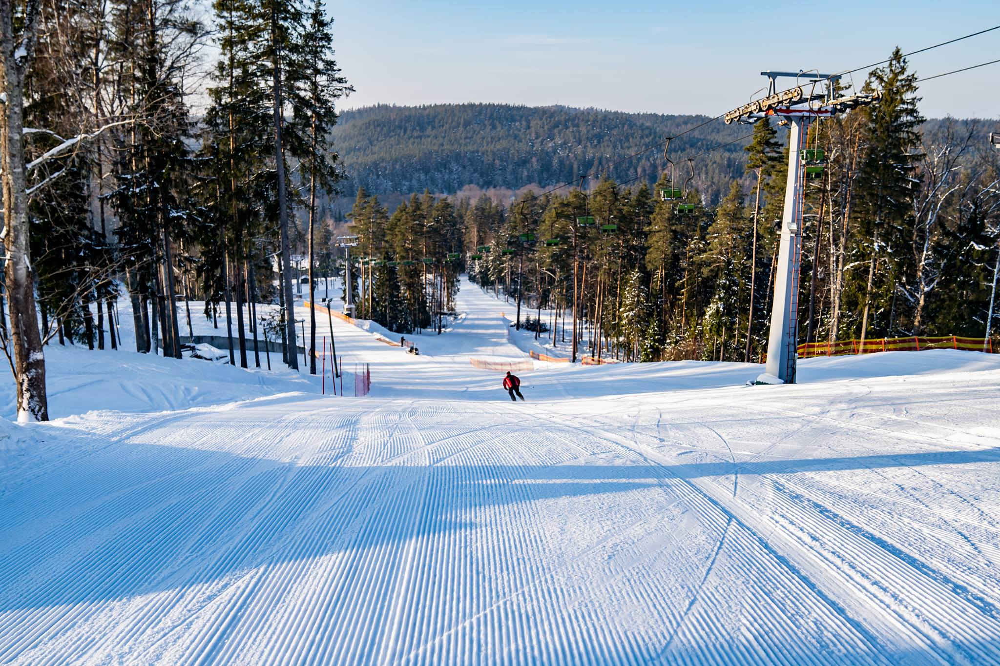
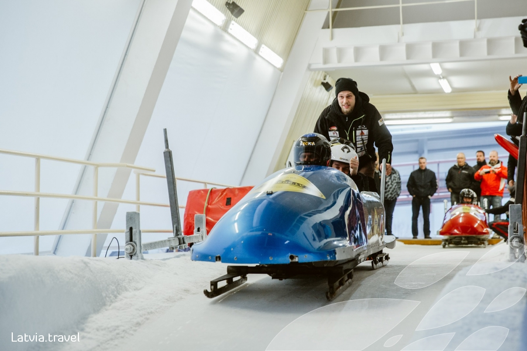
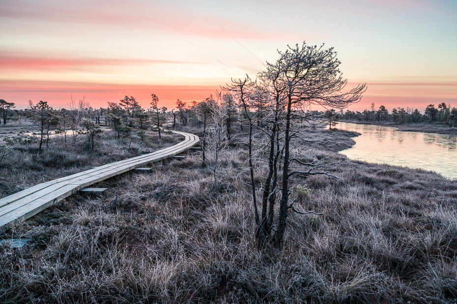

Ziemas izklaides
Izklaides Latvijā
Ozolkalns
- Kalnu slēpošana kompleksā "Ozolkalns"

Brauciens ar Vučko
- Bobsleja un kamaniņu trasē "Sigulda" vari doties izklaides braucienā ar mīksto bobu Vučko. Bet ja esi to jau pievarējis un vēlies ko ekstrēmāku, tad iesakām iejusties skeletonista ādā nobraucienā ar “Vardi”.

Došanās pargājienā
- Latvija ir skaistiem dabas parkiem bagāta. Ziemu var izbaudīt dodoties pastaigā uz kādu no 8 piedāvātajiem dabas parkiem.

forma
citaLapa
skola
darbibas